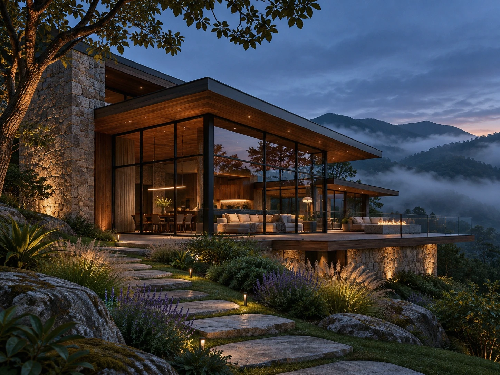
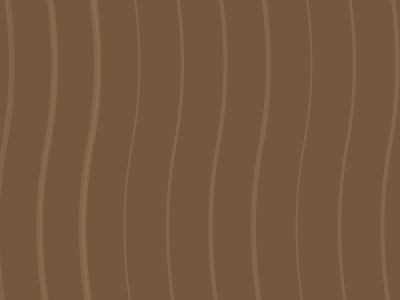

01 / Refúgio Neblina
Residencial · Montanha · Estudo conceitual
Há lugares que convidam à pausa.
Uma residência fictícia entre montanhas, construída na linguagem da madeira escura, da pedra e do vidro. A luz interna acolhe o contraste com a paisagem fria.
02 / A luz transforma tudo
Entre o dia e o anoitecer.
Alterne entre duas ilustrações produzidas para o mesmo modelo arquitetônico: mesmos volumes, fachada e enquadramento, mas com luz natural e interna distintas. Não é apenas um filtro sobre uma imagem.

Ilustrações arquitetônicas conceituais · Mesmo enquadramento

03 / Acolhimento
Uma expressão de calor em meio ao frio.
Superfícies táteis e iluminação quente estabelecem um diálogo com as condições naturais da montanha.
Explorar outras obras